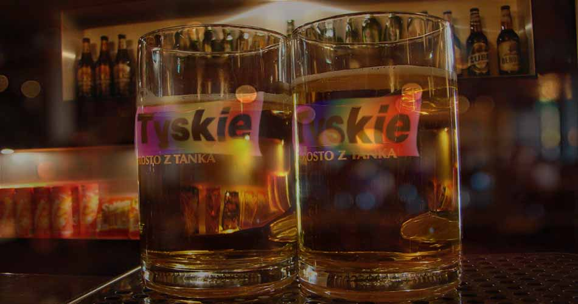
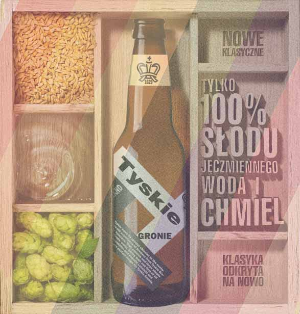

Need to Know about us
A Few Words About Us
Contact USOur Honors
- In 2002, Tyskie Gronie won The Brewing Industry International Awards, receiving the two most prestigious awards - Gold Medal and Grand Prix.
- In 2005, in Munich at a global beer fair hosted by Drink Tec, Tyskie again received the Grand Prix.
- In 2011, Tyskie received the Gold Medal du Monde Selection – International Institute for Quality Selections.
What's Unique???

- Tyskie is a pattern Gronie taste lager in the world. Perfectly composed flavor profile provides a strong bitterness and malt fully, while satisfying the desire.
- Tyskie is made from carefully selected ingredients: malted barley, hops and water, using natural yeast in the beer fermentation.
- Beer lovers appreciate its gentle hoppy flavor, creamy mouth feels, citrus aromas and thick white head.
- Seasoned drinker senses in the notes of malt, delicate aroma of hops, and even touches of apple and banana. Gronie years gaining recognition in Poland and in the world.
- Perfectly given Tyskie Gronie attracts the attention of a thick white foam, clarity, and light golden color.
- The sweetness in the 5.3% ABV Tyskie is undercut by some bitterness at the end, which helps balance out the lager.
- As the only Polish beer, twice won the "Beer Oscars" - Grand Prix at The British Brewing Industry Awards, the most prestigious beer competition in the world.